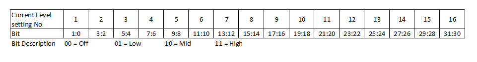

IO624 - Wheel Speed Control — Wheel Speed Control
Your model can only contain one of these blocks for each I/O module in your target machine.
The number of elements of the input depends on the protocol of the wheel speed sensor selected in the setup block and on whether the Enable Dynamic Timing parameter is enabled or not. If this parameter is enabled, additional inputs are available to tune the timing of the respective protocol during runtime.
Refer to the IO624 main page for the cycle time and bit time specifications.
Square Wave Sensor Emulator.
ChX SW: Enable Controls
whether the output of this channel is enabled (1) or disabled
(0). When disabled, the output will remain at a low current
level. Data Type:
boolean
ChX SW: Pulse Time If
enabled, this is the time at MID Current Level in seconds.
Data Type:
double
ChX SW: Cycle Time If
enabled, this is the cycle time in seconds. Data Type:
double
PWM Sensor Emulator
ChX PWM: Multiplier The pulse
length multiplier values are from 0 to 63, where 0 is no high
time; from 1 to 63 will multiply the pulse time. Refer to the
usage notes for more information. Data
Type:
double
ChX PWM: Pulse Time If
enabled, this is the pulse time in seconds. Data Type:
double
ChX PWM: Cycle Time If
enabled, this is the cycle time in seconds. Data Type:
double
AK / VDA Sensor Emulator
ChX AK/VDA: Size Specifies the
number of bits to transmit. Valid values range from 0 to 9,
where 0 indicates no bits will be transmitted. Data Type:
uint16
ChX AK/VDA: Data The data to
transmit depending on the previous input. Data Type:
uint16
ChX AK/VDA: SPLvl If enabled,
this controls the speed pulse level. False (0) for Normal (High Current) and True (1 or
more) for Artificial (Mid
Current). Data
Type:
boolean
ChX AK/VDA: Bit Time If
enabled, this is the time for one bit in seconds. Data Type:
double
ChX AK/VDA: Cycle Time If
enabled, this is the cycle time in seconds. Data Type:
double
Custom Sensor Emulator: Direct Control
ChX AK/VDA: Direct Control
Defines which current level is active as the default output
channel current. Data Type:
uint32
The possible values are:
0: Off
1: Low
2: Mid
3: High
Custom Sensor Emulator: FIFO-Sequencer
ChX CS: FIFO Frame Defines
which current levels are active as the default output channel
current. The input is a frame of current levels. Data Type:
uint32
Frame bit description:

ChX CS: Bit Time If enabled
this is the time for one bit in seconds. Data Type:
double
Custom Sensor Emulator: FIFO-Triggered
ChX CS: FIFO Frame Defines which
current levels are active as the default output channel current.
The inputs are frames of current levels. The frame bit
description is the same as in FIFO-Sequencer. Data Type:
uint32
ChX CS: Bit Time If enabled
this is the time for one bit in seconds. Data Type:
double